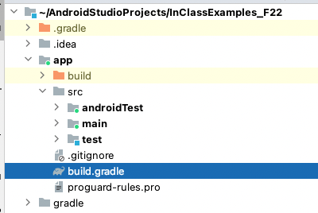
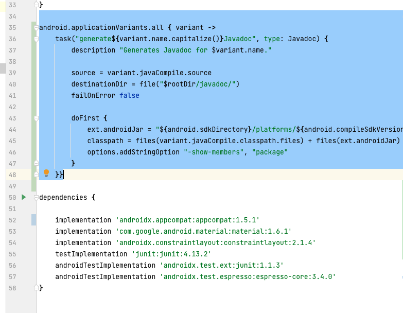
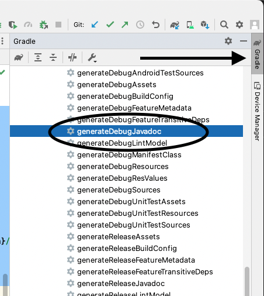
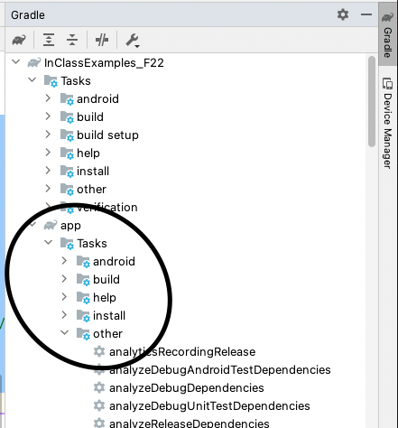
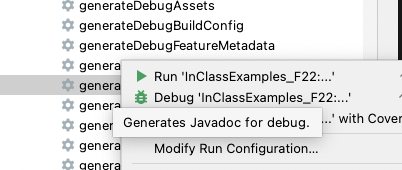
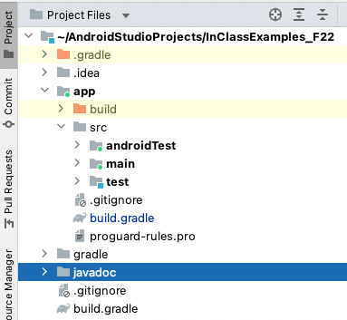

The normal way of generating Javadocs for lab 5 is broken because it doesn’t include the Android.jar from the Android platform library.
There’s a work-around by adding this task declaration to app/build.gradle

android.applicationVariants.all { variant ->
task("generate${variant.name.capitalize()}Javadoc", type: Javadoc) {
description "Generates Javadoc for $variant.name."
source = variant.javaCompile.source
destinationDir = file("$rootDir/javadoc/")
failOnError false
doFirst {
ext.androidJar = "${android.sdkDirectory}/platforms/${android.compileSdkVersion}/android.jar"
classpath = files(variant.javaCompile.classpath.files) + files(ext.androidJar)
options.addStringOption "-show-members", "package"
}
}}
If you add this code in build.gradle like this:

Then in the gradle toolbar, you’ll see this:

It’s found under /app/tasks/other:

Then, you right-click to run or debug the task

and you should see a /Javadoc folder
